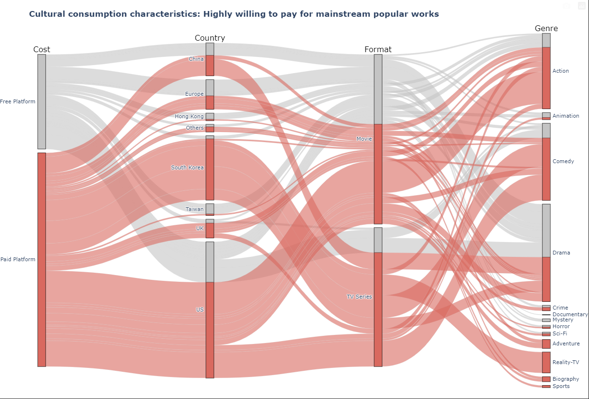
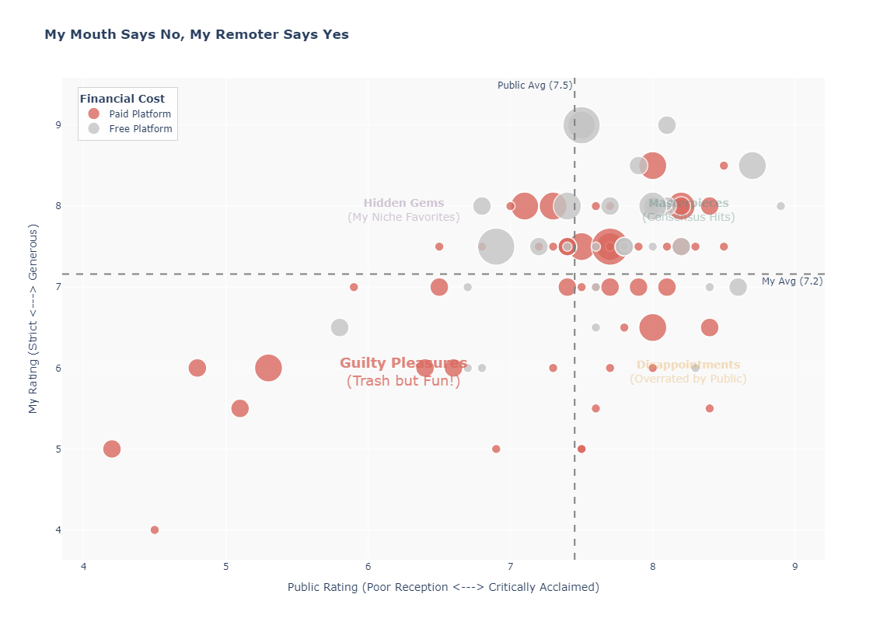
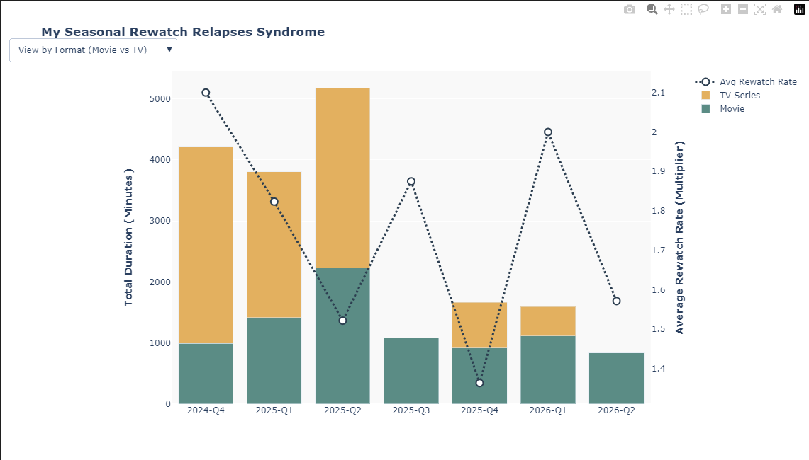
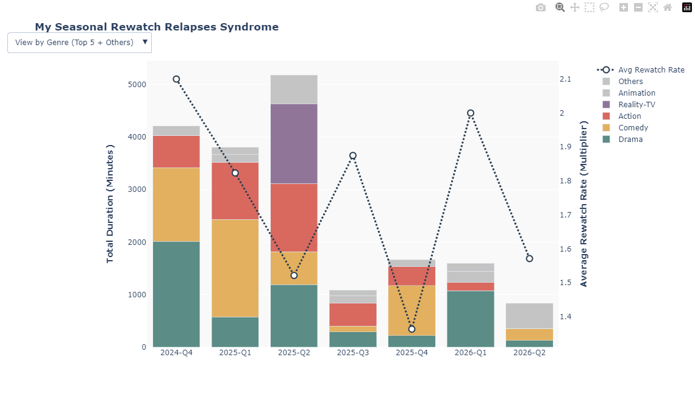

Project Introduction
Welcome to my viewing data visualization portfolio. During my demanding master's studies, movies and TV series became an essential way for me to unwind and find creative inspiration. This project collects and organizes my viewing history during this academic journey, covering genres, durations, platforms, and personal ratings. Through these customized data visualization charts, I invite you to intuitively explore the viewing habits and personal preferences hidden behind my screen.

Data Calculation & Processing Methodology:
Platform, Type, and Genre from the raw watching_data.csv dataset.groupby) to compute the exact counts of records flowing between adjacent nodes (e.g., tracking the precise number of entries shifting from "NETFLIX" to "Movie" vs. "TV Series").Duration_Minutes), providing an immediate, high-level visual breakdown of which platforms and contents dominated my screen time.
Data Calculation & Processing Methodology:
Public_Rating on the X-axis and personal My_Rating on the Y-axis to formally contrast external consensus with individual taste.Duration_Minutes or Watch_Index, making longer series or higher-weight views visually prominent.

Data Calculation & Processing Methodology:
Watch_Year_Quarter to summarize the count and total duration per quarter. This highlights how my viewing frequency adjusted rhythmically with academic workloads across semesters.Country_Release or Genre through frequency counts and normalized percentage distributions to find demographic preferences.Drama|Thriller), rows were split using .str.split('|') and expanded via .explode(). This crucial data-clearing step ensures that each sub-genre is accurately accounted for without underrepresenting composite genres.